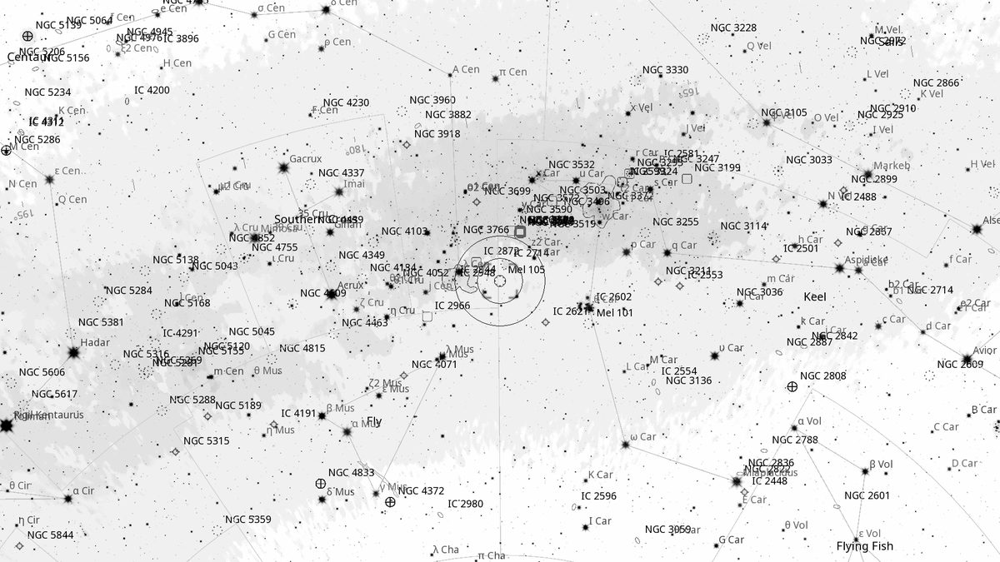
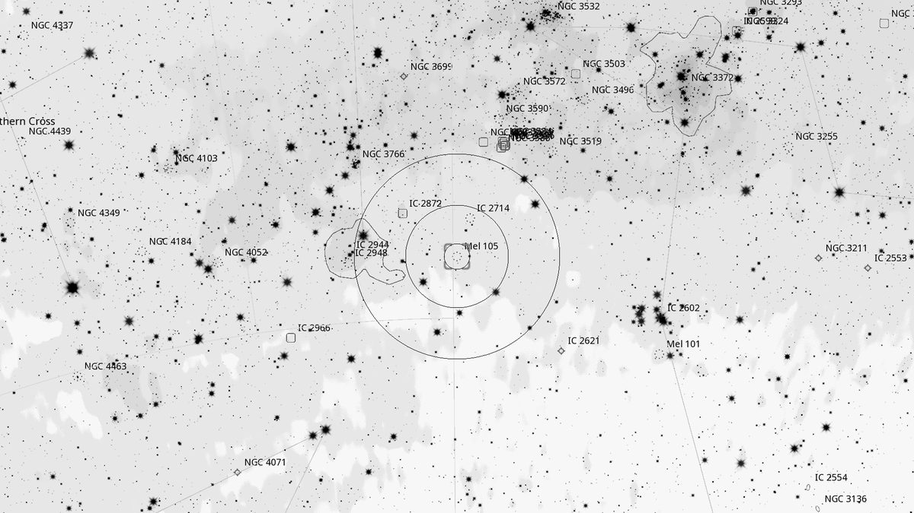
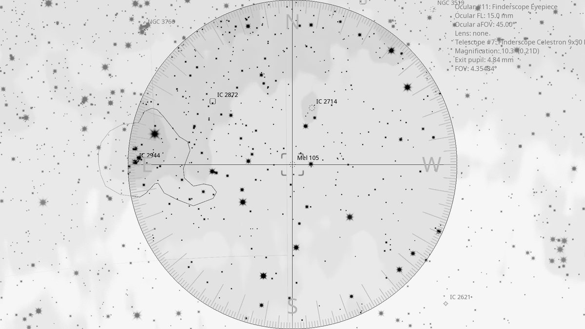
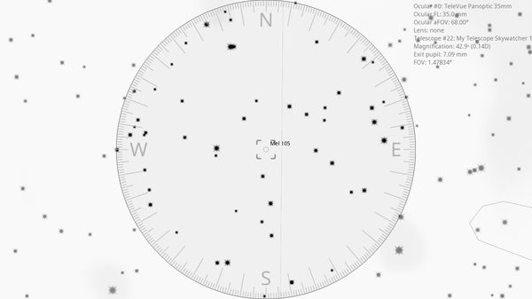

Mel 105 (OC)
| R.A. | Dec. | Size | Mag | SB | Cnt.St | Type | Distance | Chart |
|---|---|---|---|---|---|---|---|---|
| 11h 19m 43.8s | -63° 29′ 16.3″ | 4.0′ | 8.5 | 11.2 | I2r | OC | -- | -- |

Interactive Sky View
Background
Mel 105 (Melotte 105) is a compact open cluster in Carina lying within the rich Carina spiral-arm star fields, only 1^\circ from the larger and looser IC 2714 with which it makes a striking contrasting pair in a wide-field eyepiece. Listed in Philibert Jacques Melotte's 1915 catalogue of star clusters compiled from the Franklin-Adams Chart plates. At about 8.5 magnitude and 5–6' across, it is far more condensed than its neighbour, with a ring of brighter stars and a dense unresolved haze of fainter members. O'Meara highlights the IC 2714 / Mel 105 pair in Deep-Sky Companions: Southern Gems (pp. 197–198).
My Observing Notes
30-cm (12-inch f/5): On my observing list courtesy of Southern Gems, paired with IC 2714. Start by drawing a line between IC 2602 and λ Centauri, then pan about halfway along that line to pick out the unresolved hazy mass of IC 2714. With the 35 mm Panoptic both clusters fit in the same FOV and make a lovely contrast — IC 2714 a large dense disk of 60+ stars across 15', Mel 105 packed into just 5'. A few of the brighter members of Mel 105 resolve easily; the rest need higher magnification.(10 April 2026)
References
Charts



